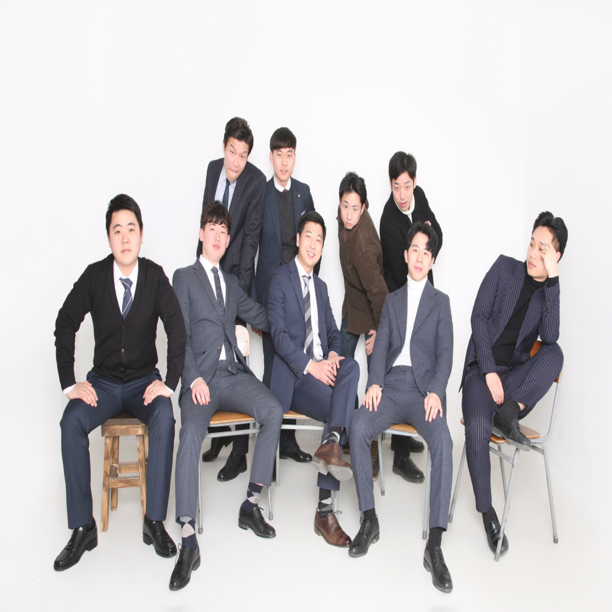
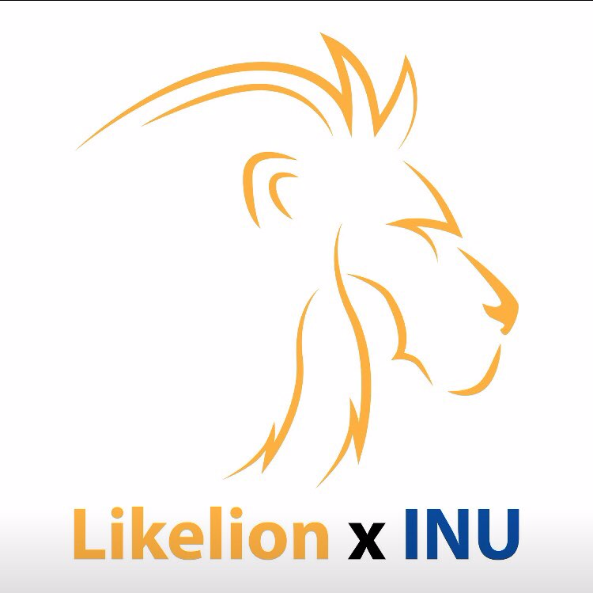

김동훈 은 누구인가?
-

1991-2010
그 의 어린시절
1991년 10월 10일 부산에서 태어난 상남자.
영재 소리를 들으며 자랐던 그였으나,
사춘기에 접어들어 방황을 하기 시작
공부와는 담을 쌓은 채 놀기 바빴던 어린 시절
정신을 차리고 보니 미래를 준비해야 할 19살
아무런 꿈도 없이 공장으로 팔려갈 뻔한 그였으나,
좋은 은사님을 만나 영어 heart조차 못 읽던 그가
2년 만에 인천대에 입학하는 쾌거를 이뤄낸다! -
2011
신입생이 되다
신입생이 된 그는 많이 바뻤다.
대학교만 오면 무엇이든지 다 될줄 알았던 그의 바램과는 다르게 학교에 오기전과 다름 없는 순위 경쟁에 흥미를 잃고 열심히 놀기 바쁘던 시절이였다. -

2012-2013
슈퍼 군생활
남들보다 1년 늦게간 군생활.
13개월의 막내 생활 이 후 상병 2호봉에 첫 후임을
받은 그는 시간가는줄 모르고 군생활을 끝내게 된다. -

2015
전자공학과 학생회
복학 후, 열심히 학교생활을 하게 된 그는 3학년이 되어 학생회 부학회장이 되게 된다. 학교생활을 재밌게 지내다보니 어느새 4학년이 다되어 가던 그였다..
-
2016
학부연구생 활동
미래에 대한 불안감을 갖게된 그는 전자공학과에서
가장 지옥이라는 연구실에 제 손으로 문을 두드리고
들어가게 된다. 성적순으로 학부연구생을 뽑던 곳이였지만 교수님과 개인면담을 통해 낮은성적임에도 불구하고 학부연구생으로 발탁 1년여간의 프로젝트 동안 팀원들의 발목을 잡지 않기 위해 열심히 노력하며 결과물을 뽑아낸 뒤 생각도 못해본 상까지 수상하게 되었다. -

2017~
멋쟁이 사자처럼 5기 활동
그는 아직 젊고, 자신의 꿈 또한 가지고있다.
멋쟁이사자처럼 5기 발탁을 통해 자신의 꿈을
이루기 위한 노력을 할 것이다. -
continue